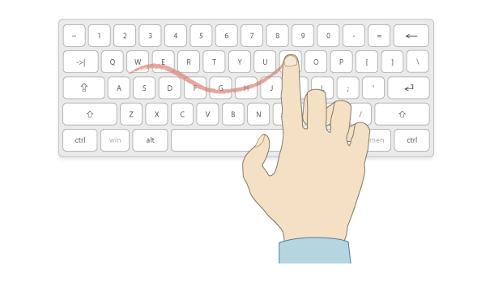
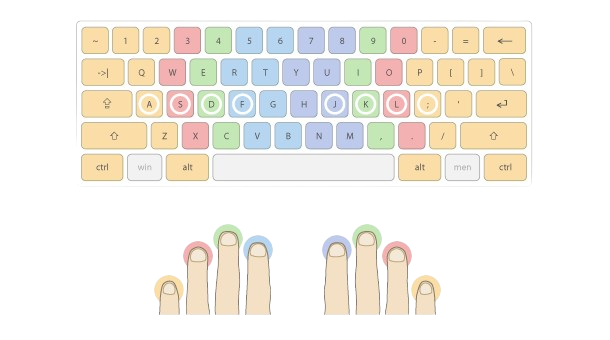
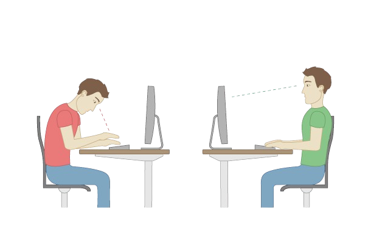

Typing with 10 fingers quickly explained
Typing practice fundamentals
The 10 finger method is a very established technique to efficiently use your computer keyboard. With some practice and the correct finger positions you can type „blindly“ on the keyboard. If you have it down, you can significantly lower your error rate and increase your typing speed at the same time.
1 Hunt and peck
Although the advantages of the 10 finger-method are perfectly obvious, still many people are hunting and pecking away. Here you are staring at your keyboard until you spot the right key and then hit it with your index finger.
After some years you start using more fingers and you might know the positions of the keys better – however, without a distinct finger-key-combination only a few people can manage „blindly“ and equally fast.
2 Basic position for typewriting
The basic concept of fast typing is quickly explained: Your fingers take up a fixed starting position, from where you can reach any key you need. Your left fingers are placed on the keys A, S, D and F. Your right fingers are on the keys J, K, L and semicolon. Your thumbs are on the space bar.

You can find the basic position without looking at your keyboard. The keys F and J, where your index fingers are placed, have a little bump. This is how you can feel where to put your index fingers, the rest of your fingers are placed accordingly then.
3 Fingers and keys
Each finger has to hit several different keys. On the chart you can see the coloured marks: they show you which finger and which key correlate.
* This is just a sample illustration. You can find the correct finger positions in our typing practic mode after you have selected your keyboard layout and started an exercise.
You want to hit the E. Here’s your left middle finger in charge, which is in the basic position placed on the key D. Reach with your left middle finger to the E and return afterwards to the basic position on the D.
| Finger Name | Left Hand | Right Hand |
|---|---|---|
| Thumb | These fingers rest on the space bar | |
| Index | Rest on the F key | Rest on the J key |
| Middle | Rest on the D key | Rest on the K key |
| Ring | Rest on the S key | Rest on the L key |
| Little | Rest on the A key | Rest on the ; key |
4 Objective of the 10 finger method
The objective is to anchor the handling of the keyboard in your subconscious. Our subconscious helps us dealing with more or less complex actions within seconds, almost automatically.
Hunting and pecking on the downside consumes unnecessary energy (where’s the next key?). However, the distinct finger-key-combinations help you to focus on the most important thing: the content.
If you have adapted your own writing system and have been using it for a long time, you will probably be slower than before after switching to the 10 finger-method. Do not be discouraged. After a short time you will notice a significant progress and write faster and more comfortably than with your old system.
5 Advantages of learning to type
Using the 10 finger-method has several advantages which improve your daily work on your computer.
Speed
By using the 10 finger-method subconsciously you can increase your typing speed significantly, in other words you will be saving precious time.
Efficiency
Since you don’t have to focus on hitting single keys any longer, you can concentrate on the texts you’re writing. You don’t have to switch back and forth anymore, your brain gets some relief and can work more efficiently.
Ergonomics
The permanent eye on the keyboard supports an unhealthy posture at work. Using the 10 finger-method you don’t need to glimpse at your keyboard all the time. This helps you to sit upright and in a good position.
6 Do I have to type with all 10 fingers?
Many users ask themselves whether they really have to use all 10 fingers or whether 6 or just 4 fingers are enough? The use of all fingers is of course the optimal condition and who really masters typing with 10 fingers, types faster and more relaxed.
However, if you find it very difficult to retrain your self-taught typing technique or if you have anatomical difficulties using all fingers, you can of course use fewer fingers or type keys with other fingers than we recommend.
The key to efficient operation of the computer keyboard is that you know the positions of the keys and the necessary movements of your fingers and that you can utilize them without lengthy thought or looking at the keyboard. The technique we recommend only offers you a method that has proven itself. However, you can of course - if you think it is necessary - adapt it to your needs.
7 Why is it worth it?
Who is our offer actually intended for? And is it worthwhile for you to invest the time and learn to type "the right way"?
Nowadays, 2/3 of all professional activities require work on the computer. And also privately we spend more and more time in the digital world. The time we spend every day entering texts on the computer may vary according to our profession and private usage patterns and may not seem so much to us - but the long-term approach is decisive here.
Let's assume you spend an average of 1 hour a day entering texts. Projected to one year, that is already 365 hours. If you double your typing speed, you will save about 180 hours per year. For a working week of 40 hours, this means 4 1/2 weeks of free time per year, which you can use for other tasks or which at least allows you to go to work on time much more often.
Of course, this is only an example calculation. Depending on how fit you are on the keyboard at the moment, even a 3- to 4-fold increase in typing speed is possible - with correspondingly higher time savings.
| words per minute | text input per day | 1 year * | 5 years * |
|---|---|---|---|
| 10 | 2 hours | 18 weeks | 90 weeks |
| 20 | 1 hours | 9 weeks | 45 weeks |
| 40 | 30 minutes | 4,5 weeks | 22,5 weeks |
| 60 | 20 minutes | 3 weeks | 15 weeks |
* based on a 40-hour working week
The time needed, which probably prevented you from learning to type with 10 fingers, can therefore be completely neglected in comparison to the possible long-term time saving.
If you can't type very quickly with your own typing technique right now, the learning effort is definitely worthwhile.
You can check your time spent on your typing practice in the statistics of our typing test mode at any time.
Improve your typing speed
Now you know all the basics to start typing with 10 fingers. Just try out our typewriting training program right now:
𝐵𝒶𝓁𝒶𝓀𝓇𝒶𝓂 𝒯𝓊𝒹𝓊
Welcome to Typing Practice Mode!
Start improving your typing speed and accuracy today with our free lessons and typing test.
0